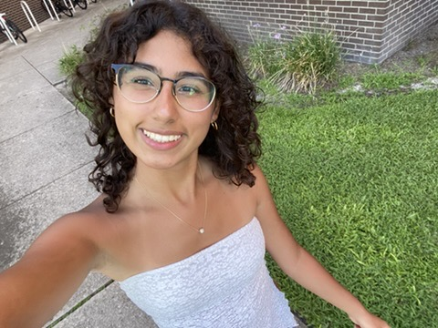
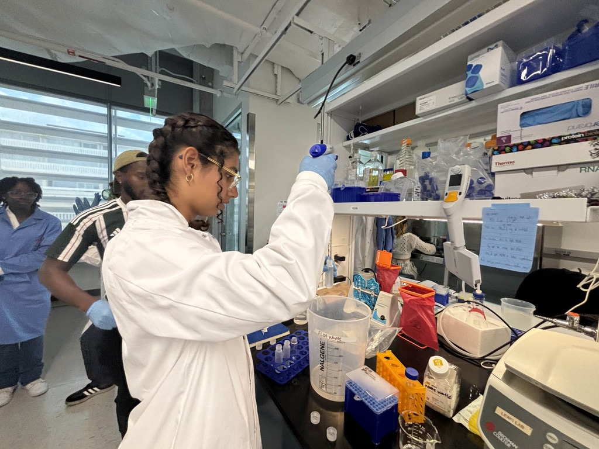

Hello! My name is Carmen Aubret, and I am a freshmen studying Biomedical Engineering at the University of Florida. I enjoy violin and crocheting, as well as research in immunotherapies and genetic technology.
I have been offered an undergradute lab opportunity with Dr. Jamal Lewis and the Immuno-Modulatory Biomaterials Lab. I will be studying under PhD student Clinton Smith working on using Cryptococcus Neoformans to deliver drugs through the blood brain barrier for more safe and efficient drug delivery.
